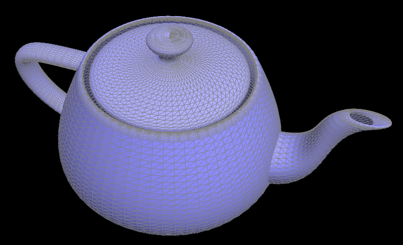
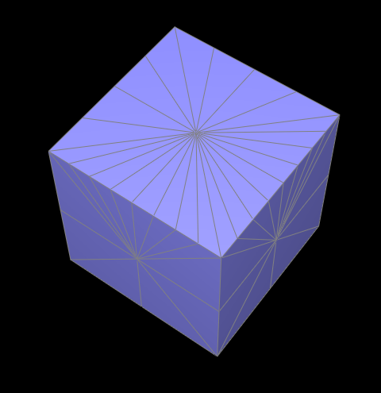

Woodworking is 90% sanding. Similarly, in this homework, I've discovered that mesh manipulation is 80% pointers and 10% crying when a mesh face disappears for no (apparent) reason.
On a more positive note, I finally understand why halfedges are compared to the 'glue' of the mesh. The halfedges hold all the relevant data about where it is in the mesh (stored in halfedge->vertex and halfedge->twin->vertex) and strictly unique mesh element assignments. Because the halfedges are so restricted, vertices, faces, and edges can just point to an arbitrary halfedge for consistent mesh traversal of any kind.
As for Bezier curves and surfaces, they're just made of lerps. Not too complicated.
Section I: Bezier Curves and Surfaces
Part 1: Bezier curves with 1D de Casteljau subdivision
de Casteljau’s algorithm recursively reduces the number of control points by picking ‘new’ control points that are some fractional t (t : [0, 1]) of the way between two consecutive control points. For every n control points, there are only n - 1 edges like this. Each time our recursive de Casteljau step is called, we pick new control points until there is only 1 point, which is just defined as a point on the curve.
Recursive Steps of Bezier Curves
Step 1
Step 2
Step 3
Step 4
Step 5
Step 6
Bezier Curve with lerping t and different control points
Part 2: Bezier surfaces with separable 1D de Casteljau
Bezier curves can easily be extended to bezier surfaces because a curve is just a line. Naturally, we can also linearly interpolate across this curve, which is all Bezier curves are. We would also have to use a new parameter u, v instead of just t so we can cover a 2D area, as opposed to a 1D line.

Bezier Teapot
Section II: Triangle Meshes and Half-Edge Data Structure
Part 3: Area-weighted vertex normals
Initialize our return Vector3D, vert_norm
Get the halfedge of this vertex. We start our while loop from here, until we reach this same edge again
Since we are guaranteed triangle meshes for this assignment, we collect the other two Vector3D coordinates of the vertices in the current face by halfedge->next()
Create edge vectors with v3 - v1 and v2 - v1, where v1 is our current vertex.
Compute the crossproduct, V. This actually gives us both the area and the normal vector of the current face
Area = |V|/2
Normal vector = V / |V|
Vert_norm += area * normal_vector
When the loop ends, normalize vert_norm and return it
Flat Shading
Smooth Shading
Part 4: Edge flip
Edge Flips were miraculously bug-free despite not following the recommended workflow of assigning everything. From former experience implementing doubly linked lists, I was really careful about making sure I had references to all 6 inner half edges of the two relevant faces so nothing would be accidentally dropped while reassigning halfedge->next() attributes.
Before
After
Part 5: Edge split
Because I was only assigning pointers for mesh elements I thought were needed rather than being cautious and assigning everything, I ended up missing the halfedge of a face. Every time I split an edge, 2 of the 4 small faces just drop out of existence. What this meant to me, visually, was that my edgeSplit created 10 different and randomly placed edges, halfedges, vertices, and faces. Halfedges sometimes pointed to the center of another face, and there was no vertex at its end. Faces of this odd triangle were dark, which made me think the winding order was wrong and somehow my splitEdge flipped a face while also destroying it. It was very confusing until I figured out that it was actually the other side of the mesh. I spent three hours trying to understand where I was creating so many mesh elements. Next time, I think I will assign pointers for every element.
Before: split
After: split
Before: split & flip
After: split & flip
Extra Credit: To implement boundary support, I used a helper method, splitHalfEdge. In splitEdge, I create the new vertex m, 1 edge, and its two associated halfedges. After correcting assignments, I call splitHalfedge on m and the outgoing halfedge for the face if the face is not a boundary face. splitHalfEdge then creates the new edge between m and the opposite old vertex, as well as its associated edges, and another face. With this structure, boundary edges won't be split on the side of the boundary.
Before
After
Part 6: Loop subdivision for mesh upsampling
Loop subdivision was implemented with 1 loop over vertices and 3 loops over edges. As suggested, I precalculated new and old vertex updated positions with 1 vertex loop and 1 edge loop. In the edge loop, I also added a counter to get the number of edges in the original mesh. We also mark edges and vertices as 'old' by setting isNew = false.
This counter is my brute force solution to only iterating over the original mesh while splitting. It works because new mesh elements like Edge are only inserted at the very back of the list, and we only create new edges. Originally, I intended to break or continue the loop if the edge isNew, but this means all 4 smaller edges created from a splitEdge must be marked isNew = true. This causes problems when we try to flip new edges that connect old and new vertices, which is really unfortunate. On the other hand, if only the 2 small, completely new edges are marked isNew, then we will wrongly split an edge that has already been split because the first edge created in my splitEdge method is along the old edge. As a result, it will also be the first edge after the original edges, and be split before reaching a completely new edge and breaking from the loop. Somehow, this also led my laptop to seek the heat death of the universe in an infinite loop. I'm still not too sure what happened.
With the counter, we can be assured that we only split edges part of the original mesh. WHile this occurs, we update the location of the new vertex in this loop because splitEdge conveniently returns the new VertexIter. This way, we don't have to go searching the vertex's neihbors for the edge it came from.
Lastly, we update positions of old vertices. First, check the flag isNew == false, then update its position. Simple.
Loop Subdivision Effects: This algorithm tends to 'round' the mesh, sharpening corners and edges. To better preserve edges, you can repeatedly split the edge. Though it still gets slightly flatened, we can reduce some of the loss of information similar to supersampling. By splitting the edge, we add a lot of vertices, which can try to preserve the information of an edge having been there.
cube
cube with loop subdivision
cube with some edge pre-splitting
after loop subdivision

cube with more edge pre-splitting (especially on one corner)

.png)
.png)
.png)
.png)
.png)
.png)
.gif)